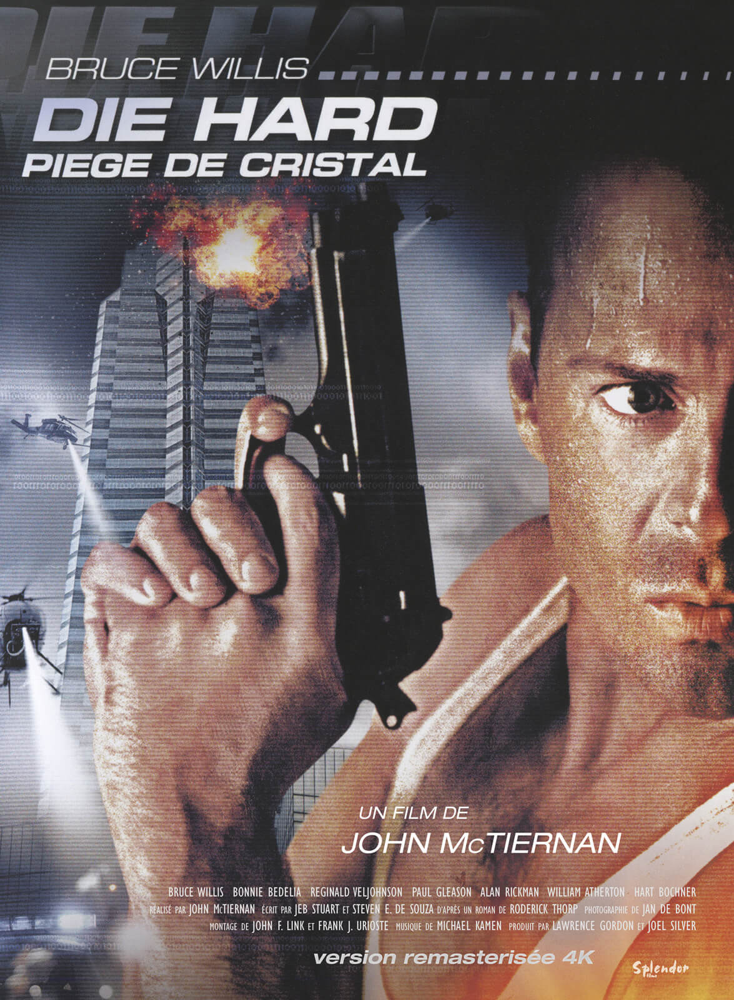
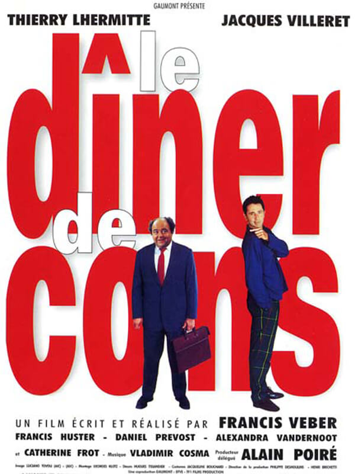
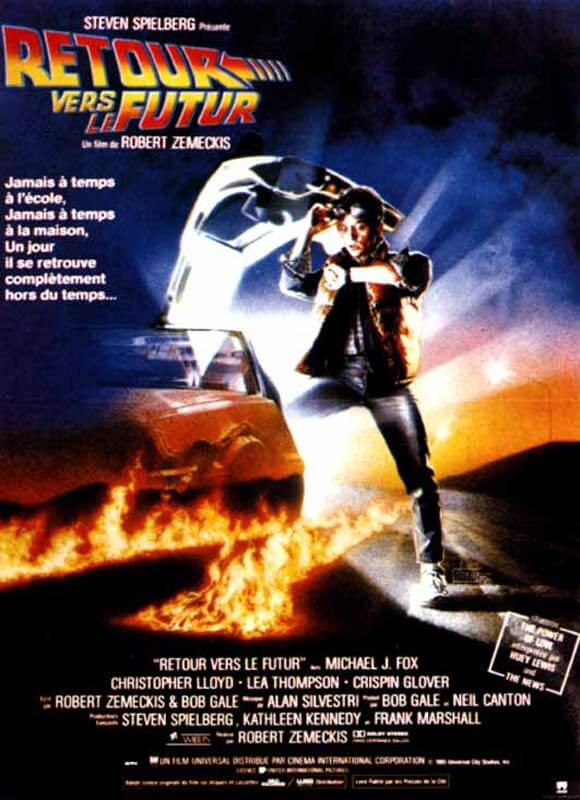
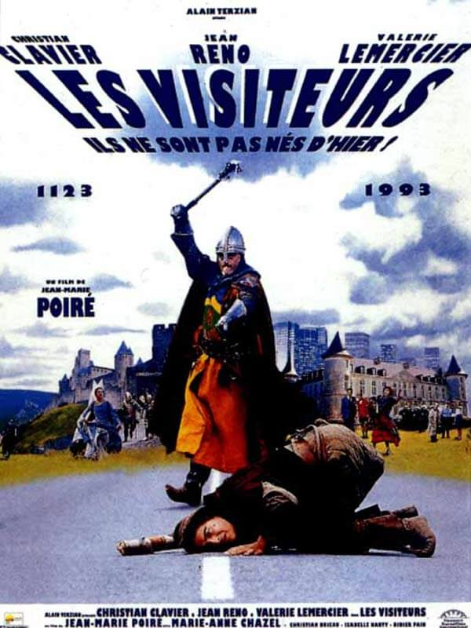
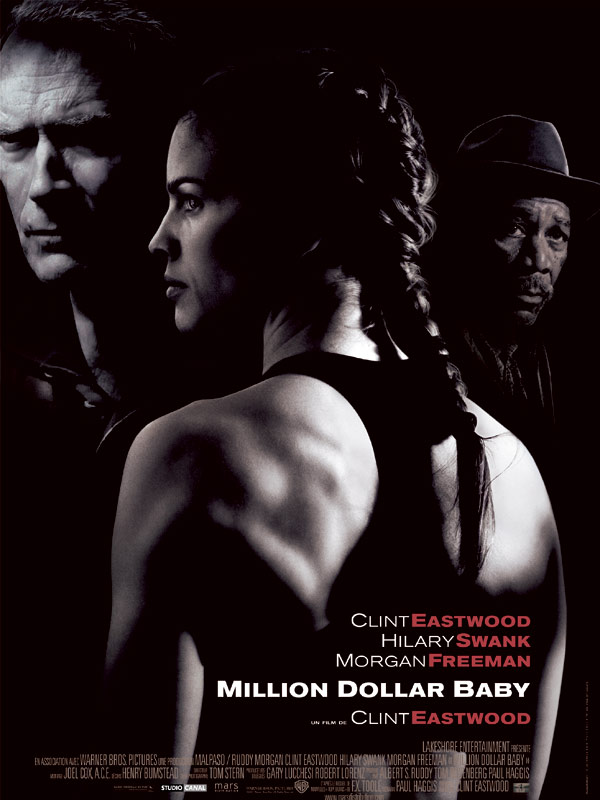
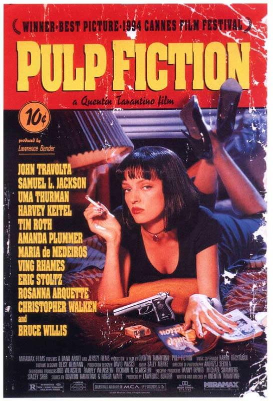
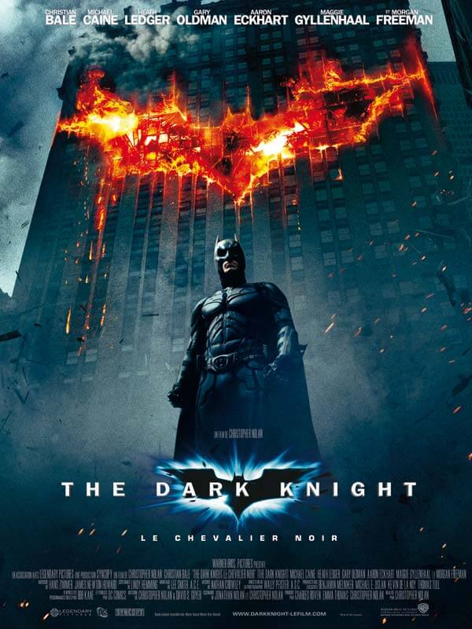

Die hard
Synopsis
Un policier new-yorkais, John McClane, est séparé de sa femme Holly, cadre dans une puissante multinationale japonaise, la Nakatomi Corporation. Venu à Los Angeles passer les fêtes avec elle, il se rend à la tour Nakatomi où le patron donne une grande soirée. Tandis que John s'isole pour téléphoner, un groupe de terroristes allemands, dirigé par Hans Gruber, pénètre dans l'immeuble.
Diffusion le 5 août à 18H
Durée du film: 2h12
Pré-inscription
Bande annonce
Le diner de cons
Synopsis
Pierre, éditeur, participe chaque mercredi à un `dîner de cons'. Le principe : chacun amène un `con' et celui qui a déniché le plus spectaculaire est déclaré vainqueur. Ce soir, son invité est François Pignon. Passionné de modèles réduits en allumettes, ce dernier est également un véritable porteur de guigne.
Diffusion le 5 août à 21H
Durée du film: 1h30
Pré-inscription
Bande annonce
Retour vers le futur
Synopsis
Le jeune Marty McFly mène une existence anonyme, auprès de sa petite amie Jennifer, seulement troublée par sa famille en crise et un proviseur qui serait ravi de l'expulser du lycée. Ami de l'excentrique professeur Emmett Brown, il l'accompagne tester sa nouvelle expérience : le voyage dans le temps via une DeLorean modifiée. La démonstration tourne mal : des trafiquants d'armes débarquent et assassinent le scientifique.
Diffusion le 6 août à 19H
Durée du film: 1h56
Pré-inscription
Bande annonce
Le roilion
Synopsis
Le fils du roi des animaux vient de naître. Son oncle est jaloux car il aimerait lui aussi régner. Il invente une ruse qui aboutira sur la mort du roi. Le jeune fils, Simba, témoin de la mort de son père, et s'en croyant responsable, va fuir sa horde.
Diffusion le 6 août à 21H
Durée du film: 1h29
Pré-inscription
Bande annonce
Les visiteurs
Synopsis
Comment en l'An de Grâce 1112, le comte de Montmirail et son fidèle écuyer, Jacquouille la Fripouille, vont se retrouver propulsés en l'an 1992 après avoir bu une potion magique fabriquée par l'enchanteur Eusaebius leur permettant de se défaire d'un terrible sort.
Diffusion le 7 août à 18H
Durée du film: 1h47
Pré-inscription
Bande annonce
Million dollar baby
Synopsis
Rejeté depuis longtemps par sa fille, l'entraîneur Frankie Dunn s'est replié sur lui-même et vit dans un désert affectif. Le jour où Maggie Fitzgerald, 31 ans, pousse la porte de son gymnase à la recherche d'un `coach', elle n'amène pas seulement avec elle sa jeunesse et sa force, mais aussi une histoire jalonnée d'épreuves et une exigence, vitale et urgente : monter sur le `ring', entraînée par Frankie, et enfin concrétiser le rêve d'une vie.
Diffusion le 7 août à 21H
Durée du film: 2h17
Pré-inscription
Bande annonce
Pulp fiction
Synopsis
L'odyssée sanglante et burlesque de petits malfrats dans la jungle de Hollywood à travers trois histoires qui s'entremêlent. Dans un restaurant, un couple de jeunes braqueurs, Pumpkin et Yolanda, discutent des risques que comporte leur activité. Deux truands, Jules Winnfield et son ami Vincent Vega, qui revient d'Amsterdam, ont pour mission de récupérer une mallette au contenu mystérieux et de la rapporter à Marsellus Wallace.
Diffusion le 8 août à 18H
Durée du film: 2h58
Pré-inscription
Bande annonce
La vie est belle
Synopsis
En 1938, Guido, jeune homme plein de gaieté, rêve d'ouvrir une librairie malgré les tracasseries de l'administration fasciste. Il tombe amoureux de Dora, institutrice étouffée par le conformisme familial et l'enlève le jour de ses fiançailles. Quelques années plus tard, Guido et Dora ont un fils, Giosué, mais les lois raciales sont entrées en vigueur et Guido est juif. Il est déporté avec son fils.
Diffusion le 8 août à 21H
Durée du film: 2h02
Pré-inscription
Bande annonce
The dark knight
Synopsis
Batman est plus que jamais déterminé à éradiquer le crime organisé qui sème la terreur en ville. Epaulé par le lieutenant Jim Gordon et par le procureur de Gotham City, Harvey Dent, Batman voit son champ d'action s'élargir. La collaboration des trois hommes s'avère très efficace et ne tarde pas à porter ses fruits jusqu'à ce qu'un criminel redoutable vienne plonger la ville de Gotham City dans le chaos.
Diffusion le 8 août à 23H
Durée du film:
Pré-inscription
Bande annonce